전자기사 (2008-09-07 기출문제)
1과목: 전기자기학
1. 다음 중 표피효과 설명으로 옳은 것은?
- 주파수가 높을수록 침투깊이가 얇아진다.
- 표피효과에 따른 표피저항은 단면적에 비례한다.
- 투자율이 크면 표피효과가 작게 나타난다.
- 도전율이 큰 도체에는 표피효과가 적게 나타난다.
(정답률: 알수없음)

2. 다음 중 반자성체에 속하는 것은?
- 철
- 니켈
- 알루미늄
- 구리
(정답률: 알수없음)
3. 공기 중에 반지름 r[m]의 매우 긴 평행 왕복도체가 d[m]의 간격으로 놓여있을 때 단위 길이당의 정전용량은 몇 [F/m] 인가? (단, r ＜ d 이다.)
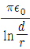
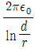
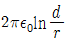
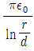
(정답률: 알수없음)
4. 공기 중에서 5[V], 10[V]로 대전된 반지름 2[cm], 4[cm]의 2개의 구를 가는 철사로 접속했을 때 공통 전위는 몇 [V] 인가?
- 6.25
- 7.5
- 8.33
- 10
(정답률: 알수없음)
5. 그림과 같은 환상 철심코일의 코일내에 저축된 자기에너지는 몇 [J] 인가?
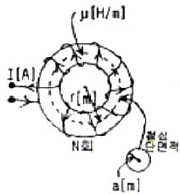
- μa2N2I2/2πr
- μa2N2I2/4πr
- μa2N2I2/2r
- μa2N2I2/4r
(정답률: 알수없음)
6. 다음 식 중 옳지 않은 것은?
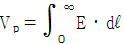
- E = -grad V
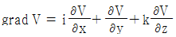
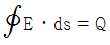
(정답률: 알수없음)
7. 정전 용량이 0.03[μF]의 평행판 공기콘덴서에 전극 간격의 1/2두께의 유리판을 전극에 평행하게 넣으면 정전용량은 약 몇 [μF] 인가? (단, 유리판의 비유전율은 10 이라 한다.)
- 0.0⑤
- 0.015
- 0.⑤5
- 0.155
(정답률: 알수없음)
8. 공기 중에서 전자기파의 파장이 3[m]라면 그 주파수는 몇 [MHz] 인가?
- 100
- 300
- 1000
- 3000
(정답률: 알수없음)
9. 반지름 a[m]의 구 도체에 전하 Q[C]이 주어질 때 구도체 표면에 작용하는 정전응력은 약 몇 [N/m2] 인가?
- 9Q2/16πεoa6
- 9Q2/32πεoa6
- Q2/16πεoa4
- Q2/32πεoa4
(정답률: 알수없음)
10. 직렬로 접속한 2개의 코일에 있어서 합성 자기 인덕턴스는 80[mH]가 되고 한쪽 코일의 접속을 반대로 하면 합성 자기 인덕턴스는 50[mH]가 된다. 두 코일사이의 상호 인덕턴스는 몇 [mH] 인가?
- 2.5
- 6.0
- 7.5
- 9.0
(정답률: 알수없음)
11. 전기회로에서 도전율[℧/m]에 대응하는 것은 자기회로에서 어떤 것인가?
- 자속
- 기자력
- 투자율
- 자기저항
(정답률: 알수없음)
12. 순수한 물의 비투자율 μr = 1, 비유전율 εr = 78 이다. 여기에 300[MHz]의 전파를 보냈을 때 전파속도는 몇 [m/s] 인가?
- 3.40×107
- 3.40×106
- 2.41×107
- 2.41×105
(정답률: 알수없음)
13. 다음 설명 중 옳지 않은 것은?
- 전기력선의 방정식은 “전기력선의 접선방향이 전계의 방향이다.”에서 유래된 것이다.
- “전기력선은 스스로 루프(loop)를 만들 수 없다.”라 함은 전계의 세기의 유일성을 나타내는 것이다.
- 구좌표로 표시한 전기력선의 방정식은 dr/Er = rdθ/Eθ = rcosθdθ/Eø로 표시된다.
- 진공 중에서 1[C]의 점전하로부터 발산되어 나오는 전기력선의 수는 1.13×1011개 이다.
(정답률: 알수없음)
14. 저항 R에 전압 V를 인가하였을 때 발생하는 열량을 설명한 것 중 옳지 않은 것은?
- 저항 R의 제곱에 반비례한다.
- 인가한 전압 V의 제곱에 비례한다.
- 전압을 가한 시간에 비례한다.
- 저항에 흐르는 전류의 제곱에 비례한다.
(정답률: 알수없음)
15. 10[cm3]의 체적에 3[μC/cm3]의 체적전하분포가 있을 때, 이 체적 전체에서 발산하는 전속은 몇 [C] 인가?
- 3×105
- 3×106
- 3×10-5
- 3×10-6
(정답률: 알수없음)
16. 환상 철심에 감은 코일에 5[A]의 전류를 흘려 2000[AT]의 기자력을 생기게 하려면 코일의 권수(회)는 얼마로 하여야 하는가?
- 10000
- 500
- 400
- 250
(정답률: 알수없음)
17. 자유공간에서 맥스웰의 전자파에 관한 기본 방정식은?
- rotH = i, rotE = -∂B/∂t
- rotH = ∂D/∂t, rotE = ∂B/∂t
- rotH = ∂D/∂t, rotE = -∂B/∂t
- rotH = i, rotE = ∂B/∂t
(정답률: 알수없음)
18. 다음 설명 중 옳지 않은 것은?
- 유전체의 전속밀도는 도체에 준 진전하 밀도와 같다.
- 유전체의 전속밀도는 유전체의 분극전하 밀도와 같다.
- 유전체의 분극선의 방향은 -분극전하에서 +분극전하로 향하는 방향이다.
- 유전체의 분극도는 분극전하 밀도와 같다.
(정답률: 알수없음)
19. 전기쌍극자에 의한 전계의 세기는 쌍극자로부터의 거리 r에 대해서 어떠한가?
- r 에 반비례한다.
- r2에 반비례한다.
- r3에 반비례한다.
- r4에 반비례한다.
(정답률: 알수없음)
20. 폐곡면을 통하는 전속과 폐곡면 내부의 전하와의 상관관계를 나타내는 법칙은?
- 가우스의 법칙
- 쿨롱의 법칙
- 포아송의 법칙
- 라프라스의 법칙
(정답률: 알수없음)
2과목: 회로이론
21. 다음 중 정현파(전파)의 파고율은?
- 1
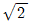
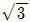
- 2
(정답률: 알수없음)
22. 전압 50[V], 전류 10[A]로서 400[W]의 전력을 소비하는 회로의 리액턴스는 몇 [Ω] 인가?
- 3
- 4
- 5
- 8
(정답률: 알수없음)
23. 그림과 같은 회로에서 전압 V는 몇 [V] 인가? (단, V는 단상교류 전압임)
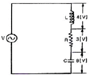
- 1
- 5
- 7
- 15
(정답률: 알수없음)
24. 다음 그림과 같은 4단자 회로망에서 4단자 정수는?
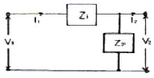
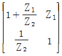
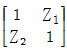
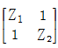
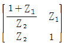
(정답률: 알수없음)
25. 다음은 정현파를 대표하는 phasor이다. 정형파를 순시치로 나타내면?
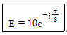
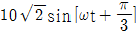
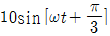
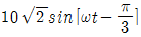
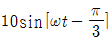
(정답률: 알수없음)
26. 그림은 이상적 변압기이다. 성립되지 않는 관계식은? (단, n1, n2는 1차 및 2차 코일의 권회수, n = n1/n2이다.)
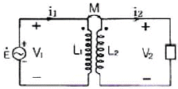
- V1/V2 = n1/n2
- V1i1 = V2i2
- i1/i2 = n2/n1
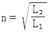
(정답률: 알수없음)
27. 단위 계단함수 U(t)와 지수 e-t의 컨볼루션 적분은?
- e-t
- 1/e-t
- 1-e-t
- 1+e-t
(정답률: 알수없음)
28. 100[V], 30[W]의 형광등에 100[V]를 가했을 때, 0.5[A]의 전류가 흐르고 그 소비전력은 20[W]이었다면 이 형광등의 역률은?
- 0.4
- 0.5
- 0.6
- 0.8
(정답률: 알수없음)
29. 다음 회로의 영상 임피던스 Z01은 약 얼마인가?
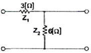
- 4.1[Ω]
- 5.2[Ω]
- 6.3[Ω]
- 7.4[Ω]
(정답률: 알수없음)
30. 다음 회로망은 T형 회로 및 π형 회로의 종속 접속으로 이루어졌다. 이 회로망의 ABCD parameter 중 옳지 않은 것은?
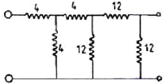
- A = 7
- B = 48
- C = 6
- D = 7
(정답률: 알수없음)
31. 이상적인 변압기의 조건으로 옳은 것은?
- 코일에 관계되는 손실이 없이, 두 코일의 결합계수가 1인 경우
- 상호 자속이 전혀 없는 경우, 즉 유도 결합이 없는 경우
- 상호 자속과 누설 자속이 전혀 없는 경우
- 결합 계수 K가 0인 경우
(정답률: 알수없음)
32. RL 직렬회로에 t = 0일 때, 직류 전압 100[V]를 인가하면 흐르는 전류 i(t)는? (단, R = 50[Ω], L = 10[H]이다.)
- 2(1-e5t)
- 2(1-e-5t)
- 1.96(1-et/5)
- 1.96(1-e-t/5)
(정답률: 알수없음)
33. 저항 1개와 커패시터 1개를 직렬 연결하여 R-C의 직렬회로를 구성하고, 일정한 정현파 전압을 인가하였다. 이 때 커패시터의 양단에서의 전압위상과 저항에 흐르는 전류의 위상을 비교하였을 때의 위상차는?
- 45°
- 90°
- 135°
- 180°
(정답률: 알수없음)
34. K의 비례요소가 존재하는 회로의 전달함수는?
- K
- K/s
- 1/K
- sK
(정답률: 알수없음)
35. 다음 회로에서 커패시터에 걸리는 전압을 구하면?
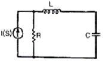
- V(S) = I(S)/(SL+R)SC+1
- V(S) = I(S)R/(SL+R)SC+1
- V(S) = I(S)/(SL+R)+1
- V(S) = I(S)R/(SL+R)SC
(정답률: 알수없음)
36. 기본파의 50[%]인 제3고조파와 30[%]인 제5고조파를 포함하는 전압파의 왜형률은 약 얼마인가?
- 0.2
- 0.4
- 0.6
- 0.8
(정답률: 알수없음)
37. 다음 그림과 쌍대가 되는 회로는?
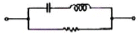
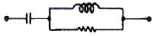
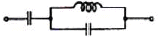
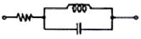
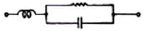
(정답률: 알수없음)
38. 다음 그림에서 i1 = 16[A], i2 = 22[A], i3 = 18[A], i4 = 27[A]일 때 i5는?
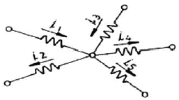
- -7[A]
- -15[A]
- 3[A]
- 7[A]
(정답률: 알수없음)
39. 그림의 회로가 정저항 회로가 되려면 L은 몇 [H] 인가? (단, R = 20[Ω], C = 200[μF]이다.)
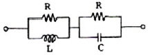
- 0.08
- 0.8
- 1
- 10
(정답률: 알수없음)
40. 상수 1의 라플라스 역변환은?
- μ(t)
- t
- δ(t)
- r(t)
(정답률: 알수없음)
3과목: 전자회로
41. 다음과 같이 미분 연산증폭기에 삼각파 입력이 공급될 때, 출력전압의 범위는?
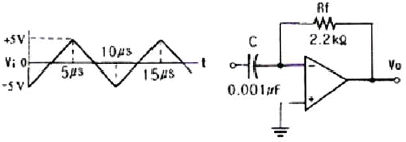
- -3.3[V] ~ +3.3[V]
- -4.4[V] ~ +4.4[V]
- -5.5[V] ~ +5.5[V]
- -6.6[V] ~ +6.6[V]
(정답률: 알수없음)
42. IDSS = 25[mA], VGS(off) = 15[V]인 P 채널 JFET가 자기바이어스 되는데 필요한 Rs 값은 약 몇 [Ω] 인가? (단, VGS=5[V]이다.)
- 100[Ω]
- 270[Ω]
- 450[Ω]
- 510[Ω]
(정답률: 알수없음)
43. 다음 연산증폭기 회로에서 저항 Rf 양단에 걸리는 전압 Vf = (25 If2 + 50 If + 3)[V]의 관계가 있을 때 출력 전압 Vo는 몇 [V] 인가?
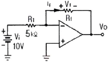
- -3[V]
- -3.2[V]
- -4.1[V]
- -5.8[V]
(정답률: 알수없음)
44. FM 변조 방식에서 변조지수가 6 이고, 신호 주파수가 10[kHz]일 때 점유주파수 대역폭은 몇 [kHz] 인가?
- 60[kHz]
- 70[kHz]
- 120[kHz]
- 140[kHz]
(정답률: 알수없음)
45. 고역 차단주파수가 500[kHz]인 증폭회로를 2단으로 종속 연결했을 때 종합 고역 차단주파수는 약 몇 [kHz]인가?
- 120[kHz]
- 240[kHz]
- 320[kHz]
- 500[kHz]
(정답률: 알수없음)
46. 다음 중 BJT와 비교한 FET의 특성에 대한 설명으로 적합하지 않은 것은?
- 전류제어형이다.
- 잡음특성이 양호하다.
- 이득대역폭적이 작다.
- 온도 변화에 따른 안정성이 높다.
(정답률: 알수없음)
47. 다음 중 수정발진기에 대한 설명으로 적합하지 않은 것은?
- 압전 효과를 이용한다.
- 발진 주파수의 안정도가 매우 높다.
- 수정편이 컷 방법에 따라 온도 계수가 달라진다.
- 수정편이 같은 두께일 때 X 컷 보다 Y 컷의 발진주파수가 높다.
(정답률: 알수없음)
48. 다음 중 베이스 접지 증폭회로에 대한 설명으로 적합하지 않은 것은?
- 고주파수 특성이 양호하다.
- 입출력 위상은 동위상이다.
- 입력저항은 수십[Ω] 정도로 작다.
- 전류 증폭도가 수십 ~ 수백으로 크다.
(정답률: 알수없음)
49. 어떤 차동증폭기의 동상신호제거비(CMRR)가 50[dB]이고 차동이득(Ad)이 1000일 때 동상이득 (AC)은 얼마인가?
- 0.1
- 1
- 10
- 12.5
(정답률: 알수없음)
50. 다음 연산증폭기 회로에서 출력임피던스는 약 몇 [Ω]인가? (단, 개루프 전압증폭도 A는 10000 이고, 출력임피던스는 50[Ω]이다.)
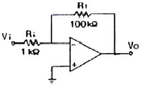
- 0.1
- 0.5
- 1.0
- 5.0
(정답률: 알수없음)
51. 변조도가 100[%]인 DSB 파의 전력이 30[kW]이라면 반송파 성분의 전력은 몇 [kW] 인가?
- 10[kW]
- 20[kW]
- 30[kW]
- 45[kW]
(정답률: 알수없음)
52. 다음 중 트랜스 결합 증폭회로에 대한 설명으로 적합하지 않은 것은?
- 주파수 특성이 매우 평탄하다.
- 전압손실이 거의 없어 전원 효율이 좋다.
- 트랜스의 성능을 좋게 하기 위해서는 크기가 대형이고 값이 비싸다.
- 트랜스 결합 증폭회로는 임피던스 정합이 용이하여 주로 전력증폭용으로 사용된다.
(정답률: 알수없음)
53. α가 0.98이고, α 차단 주파수가 2000[kHz]인 트랜지스터를 이미터 접지로 사용할 경우 β 차단 주파수는 몇 [kHz] 인가?
- 20[kHz]
- 30[kHz]
- 40[kHz]
- 50[kHz]
(정답률: 알수없음)
54. fT(단위 이득 주파수)가 175[MHz]인 트랜지스터가 중간 영역에서 전압이득이 50인 증폭기로 사용될 때 이상적으로 이룰 수 있는 대역폭은 몇 [MHz] 인가?
- 2.7[MHz]
- 3.5[MHz]
- 5.2[MHz]
- 25.4[MHz]
(정답률: 알수없음)
55. 트랜지스터 컬렉터 누설 전류가 주위 온도 변화로 1.2[μA]에서 121.2[μA]로 증가되었을 때 컬렉터 전류는 12[mA]에서 12.6[mA]로 변화하였다면 안정계수는 얼마인가?
- 3.2
- 5.0
- 6.5
- 8.3
(정답률: 알수없음)
56. 어떤 증폭기에서 궤환이 없을 때 전압이득이 60[dB]이다. 궤환 시의 전압 궤환율(β)이 0.01일 때 전압이득은 약 몇 [dB] 인가?
- 30[dB]
- 40[dB]
- 50[dB]
- 60[dB]
(정답률: 알수없음)
57. 다음 중 트랜지스터 증폭기에서 온도 변화에 따른 동작점(Q)의 변동 원인에 영향이 가장 적은 것은?
- β값의 변화
- VBE값의 변화
- ICO값의 변화
- 동작 주파수 값의 변화
(정답률: 알수없음)
58. 다음 회로의 동작에 대한 설명으로 가장 적합한 것은? (단, 입력신호는 진폭이 Vm인 정현파이고, 다이오드는 이상적인 것이며, RC 시정수는 신호파의 주기에 비해 매우 크다.)
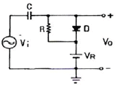
- 출력은 Vi 이다.
- 출력은 2Vi 이다.
- 출력전압은 VR-Vm인 정현파이다.
- 부방향 peak를 기준레벨 VR로 클램프 한다.
(정답률: 알수없음)
59. 다음 회로에서 리플 함유율을 작게 하는 방법으로 적합하지 않은 것은?
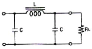
- L을 크게 한다.
- C를 크게 한다.
- RL을 적게 한다.
- 교류입력 전원의 주파수를 높게 한다.
(정답률: 알수없음)
60. 다음 연산증폭기 회로에서 R1 = 10[kΩ], R2 = 100[kΩ] 일 때 궤환율(β)은 약 얼마인가?
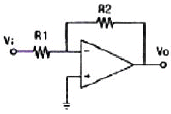
- 0.01
- 0.09
- 0.12
- 0.9
(정답률: 알수없음)
4과목: 물리전자공학
61. 300[°K]에서 Fermi 준위 Ef 보다 0.1[eV] 낮은 에너지(Energy) 준위에 전자가 점유할 확률은 약 몇 [%] 인가?
- 98[%]
- 88[%]
- 78[%]
- 68[%]
(정답률: 알수없음)
62. 반도체에 전계를 가하면 정공의 드리프트(drift) 속도의 방향은 어떻게 되는가?
- 전계와 같은 방향이다.
- 전계와 반대 방향이다.
- 전계와 직각 방향이다.
- 전계와 무관한 지그재그 운동을 한다.
(정답률: 알수없음)
63. 다음 중 반도체 내의 캐리어의 이동도(μ)와 확산 계수 (D) 사이의 관계가 바르게 된 것은?
- D/μ = kT/e
- μ/D = kT/e
- D = kT/e
- D/μ = 1/kTe
(정답률: 알수없음)
64. 전자가 외부의 힘(열, 빛, 전장을) 받아 핵의 구속력으로부터 벗어나 결정 내를 자유로이 이동할 수 있는 자유전자의 상태로 존재하는 에너지대는?
- 충안대(filled band)
- 급지대(forbidden band)
- 가전자대(valence band)
- 전도대(conduction band)
(정답률: 알수없음)
65. 일반적으로 순수(intrinsic) 반도체에서 온도의 상승으로 나타나는 현상에 대한 설명으로 옳은 것은?
- 반도체의 저항이 증가한다.
- 정공이 전도대로 이전한다.
- 원자의 에너지가 증가한다.
- 원자의 에노지가 감소한다.
(정답률: 알수없음)
66. 억셉터 불순물로 사용되는 원소가 아닌 것은?
- 갈륨(Ga)
- 인듐(In)
- 비소(As)
- 붕소(B)
(정답률: 알수없음)
67. 다음 중 플라즈마(Plasma)와 같은 기체 상태의 경우 적용될 수 있는 분포식은?
- Einstein의 관계식
- Maxwell-Boltzmann
- Schro dinger 방정식
- 1차원의 Poisson 방정식
(정답률: 알수없음)
68. 다음 중 물질에서 전자가 방출할 수 있는 조건으로 적당하지 않은 것은?
- 열을 가한다.
- 빛을 가한다.
- 전계를 가한다.
- 압축한다.
(정답률: 알수없음)
69. 마치 3극관이 음극에서 양극에 향하는 전자류를 격자에 의하여 제어하듯이 N형(또는 P형) 반도체 내의 전자(정공)의 흐름을 제어하는 것은?
- TRIAC(트라이맥)
- FET(Field Effect Transistor)
- SCR(Silicon Controlled Rectifier)
- UJT(UniJunction Junction Transistor)
(정답률: 알수없음)
70. 페르미 준위에 대한 설명으로 옳은 것은?
- 불순물의 양과 온도가 증가할수록 금지대의 중앙으로부터 멀어진다.
- 불순물의 양과 온도가 증가할수록 진성반도체의 페르미 준위에 가까워진다.
- 불순물의 양이 증가하면 금지대의 중앙으로부터 멀어지고, 온도가 증가하면 그와 반대이다.
- 불순물의 양이 증가하면 금지대의 중앙으로 가까워지고, 온도가 증가하면 그와 반대이다.
(정답률: 알수없음)
71. 드브로이(de Broglie) 물질파의 개념으로 볼 때 전자파의 파장이 무한대일 경우 전자의 상태는?
- 정지상태
- 직선운동
- 나선운동
- 원운동
(정답률: 알수없음)
72. 다음 중 열평형 상태에서 있는 반도체에서 정공(正孔) 밀도 p와 전자밀도 n을 곱한 pn적에 관한 설명으로 옳은 것은?
- 온도 및 불순물 밀도의 함수이다.
- 온도 및 금지대 에너지 폭의 함수이다.
- 불순물 밀도 및 Fermi 준위의 함수이다.
- 불순물 밀도 및 금지대 에너지 폭의 함수이다.
(정답률: 알수없음)
73. PN 접합의 역전압 의존성을 이용한 소자는?
- Tunnel 다이오드
- Zener 다이오드
- Varistor
- Varactor 다이오드
(정답률: 알수없음)
74. 트랜지스터 증폭기에서 부하 저항이 클수록 전류 이득은?
- 변함없다.
- 감소한다.
- 증가한다.
- 베이스 접지에서만 증가하고, 에미터 접지나 컬렉터 접지에서는 감소한다.
(정답률: 알수없음)
75. 다음 중 얼리(Early) 효과와 관계되는 것은?
- 항복 현상
- 이미터의 효율
- 베이스 폭의 감소
- 역바이어스 전압
(정답률: 알수없음)
76. 1[Couloeb]의 전하량은 전자 몇 개가 필요한가? (단, e = 1.602×10-19[C])
- 6.24×1015
- 6.24×1018
- 6.24×1020
- 6.24×1022
(정답률: 알수없음)
77. 서로 다른 도체로 폐회로를 구성하고 직류 전류를 흐르게 하면, 전류의 방향에 따라 서로 다른 도체 사이의 접합의 한쪽은 가열되는 반면, 또 다른 한쪽은 냉각이 되는 효과를 무엇이라 하는가?
- Peltier Effect
- Seebeck Effect
- Zeeman Effect
- Hall Effect
(정답률: 알수없음)
78. 접합형 트랜지스터의 구조를 올바르게 설명한 것은?
- 이미터, 베이스, 컬렉터의 폭은 거의 비슷한 정도로 한다.
- 불순물 농도는 이미터를 가장 크게, 컬렉터를 가장 적게 한다.
- 베이스 폭은 비교적 좁게 하고, 불순물은 적게 넣는다.
- 베이스 폭은 비교적 좁게 하고, 불순물은 많이 넣는다.
(정답률: 알수없음)
79. 진성 반도체에 대한 설명 중 옳지 않은 것은?
- 반도체의 저항 온도계수는 양(+)이다.
- 운반체(carrier)의 밀도는 온도가 상승하면 증가한다.
- Fermi 준위는 어떤 온도에서든지 전도대와 가전자대의 중앙에 위치한다.
- 단위 체적당 전도대 중의 전자의 수와 단위 체적당 가전자대 중의 정공의 수는 같다.
(정답률: 알수없음)
80. 빛의 파동성을 입증할 수 있는 근거는?
- 산란현상
- 회절현상
- 광전현상
- 콤프턴(compton) 효과
(정답률: 알수없음)
5과목: 전자계산기일반
81. CPU가 명령어를 실행할 때의 메이저 상태에 대한 설명으로 옳은 것은?
- 실행 사이클은 간접주소 방식의 경우에만 수행된다.
- 명령어의 종류를 판별하는 것을 간접 사이클이라 한다.
- 기억장치내의 명령어를 CPU로 가져오는 것을 인출사이클이라 한다.
- 인터럽트 사이클 동안 데이터를 기억장치에서 읽어낸다.
(정답률: 알수없음)
82. 다음 회로에서 A = 1011, B = 0111 이 입력되어 있을 때 그 출력은?
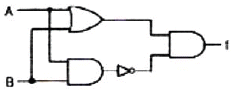
- 0101
- 1010
- 0110
- 1100
(정답률: 알수없음)
83. 메모리 장치와 주변 장치 사이에서 데이터의 입ㆍ출력 정송이 직접 이루어지는 것은?
- MIMD
- UART
- MIPS
- DMA
(정답률: 알수없음)
84. 다음은 언팩 10진 형식으로 표기한 것이다. 이를 10진수로 옳게 표현한 것은?
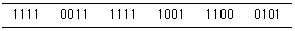
- +9125
- -9125
- +395
- -395
(정답률: 알수없음)
85. 프로그램이 수행될 때 최근에 사용한 인스트럭션과 데이터를 다시 사용할 가능성이 크다는 것을 무엇이라 하는가?
- 접근의 국부성
- 디스크인터리빙
- 페이징
- 블록킹
(정답률: 알수없음)
86. 직렬 시프트 레지스터(4bit)에 1011 이 현재 들어있고 이 직렬 레지스터가 0110을 삽입하려면 몇 개의 클럭펄스가 필요한가?
- 11
- 6
- 5
- 4
(정답률: 알수없음)
87. 다음 중 홀수 패리티 발생기에 대한 식으로 옳은 것은? (단, 입력은 x, y, z이다.)
- (x ⊙ y) ⊙ z
- (x ⊕ y) ⊕ z
- (x ⊕ y) ⊙ z
- (x+y)ㆍz
(정답률: 알수없음)
88. 운영체제(OS)에서 제어 프로그램에 속하지 않는 것은?
- 감시 프로그램
- 작업 관리 프로그램
- 데이터 관리 프로그램
- 언어 번역 프로그램
(정답률: 알수없음)
89. 64k인 주소공간과 4K인 기억공간을 가진 컴퓨터의 경우, 한 페이지(page)가 512워드로 구성된다면 페이지와 블록 수는 각각 얼마인가?
- 페이지 : 16, 블록 : 12
- 페이지 : 16, 블록 : 16
- 페이지 : 128, 블록 : 8
- 페이지 : 128, 블록 : 16
(정답률: 알수없음)
90. 번지를 기억하고 있는 레지스터와 관계없는 것은?
- MAR
- IR
- PC
- SP
(정답률: 알수없음)
91. 캐시 메모리와 관련이 가장 적은 것은?
- 연관매핑(associative mappint)
- 가상기억장치(virtual memory)
- 적중률(hit ratio)
- 참조의 국한성(locality of reference)
(정답률: 알수없음)
92. 디스크에 헤드가 가까울수록 불순물이나 결함에 의한 오류 발생의 위험이 더 크다. 이러한 문제점을 해결한 것은?
- 윈체스터 디스크
- 이동 디스크
- 콤팩트 디스크
- 플로피 디스크
(정답률: 알수없음)
93. 다음 설명 중 옳지 않은 것은?
- 레지스터는 데이터를 일시적으로 기억하는 장치로 기능에 따라 여러 가지 이름이 붙여진다.
- 프로그래머는 연산용 레지스터에 기억된 내용을 프로그램을 통해 직접적으로 변경할 수 없다.
- 명령 레지스터는 실행 중에 있는 명령을 기억하고 주소를 보관하는 레지스터로서 명령부와 주소부로 구성되어 있다.
- 명령해독기는 AND 논리회로의 집합으로 구성되어 있다.
(정답률: 알수없음)
94. 변수에 대한 설명으로 맞는 것은?
- 프로그램 내에서 자료를 기억시킬 수 있는 기억장소
- 하드디스크 내에 자료를 기억시킬 수 있는 공간
- 프로그램 실행과정에서 변하지 않는 값을 저장
- 프로그램 실행과정에서 프로그램이 중단되더라도 손실되지 않는다.
(정답률: 알수없음)
95. 10진수 13을 그레이 코드(Gray code)로 변환하면?
- 1001
- 0100
- 1100
- 1011
(정답률: 알수없음)
96. 서브루틴(subroutine) 호출 처리 작업시 복귀주소를 저장하고 조회하는 용도에 적합한 자료 구조는?
- 업
- 큐
- 스택
- 연결 리스트
(정답률: 알수없음)
97. memory-mapped I/O 방식의 사용상 특징은?
- 메모리와 입ㆍ출력 번지 사이의 구별이 없다.
- 입ㆍ출 전용 번지가 할당되기 때문에 프로그램의 이해 및 작성이 쉽다.
- 기억장치의 이용효율이 높다.
- 하드웨어가 복잡하다.
(정답률: 알수없음)
98. 반도체 메모리 소자 중 SRAM의 특징이 아닌 것은?
- 플립플롭에 의한 기억소자로 내부회로가 복잡하다.
- DRAM에 비해서 고집적도가 용이하고 소비전력이 많다.
- 읽기, 쓰기의 고속 실행이 가능하다.
- refresh 회로가 필요 없다.
(정답률: 알수없음)
99. 단항(unary) 연산에 속하지 않는 것은?
- MOVE 연산
- Complement 연산
- Shift 연산
- OR 연산
(정답률: 알수없음)
100. 주소지정방식(addressing mode)에서 오퍼랜드(operand) 부분에 데이터가 포함되어 실행되는 방식은?
- index addressing mode
- direct addressing mode
- indirect addressing mode
- immediate addressing mode
(정답률: 알수없음)